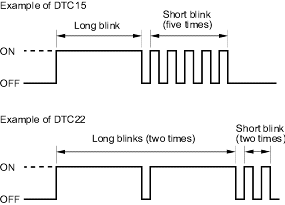
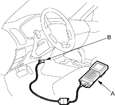

- The blinking frequency indicates the DTC. DTCs are indicated by a series of long and short blinks. One long blink equals 10 short blinks. Add the long and short blinks together to determine the DTC. After determining the DTC, refer to the DTC Troubleshooting Index.
NOTE:
- If the DTC is not memorised, the ABS indicator will go off for 3.6 seconds and then come back on.
- If the ABS indicator stays on, troubleshoot for ''ABS indicator does not go off'' (see step 1 on page 19-113).
The system will not indicate the DTC unless these conditions are met:
- The brake pedal is not pressed.
- The ignition switch is turned ON (II).
- The SCS circuit is shorted to body ground before the ignition switch is turned ON (II).

- Turn the ignition switch OFF.
- Disconnect the DLC terminal box from the DLC.
Honda PGM Tester Method:
- With the ignition switch OFF, connect the Honda PGM Tester (A) to the 16P Data Link Connector (DLC) (B) under the driver's side of the dashboard.

- Turn the ignition switch ON (II) and clear the DTC(s) by following the screen prompts on the PGM Tester.
NOTE: See the Honda PGM Tester user's manual for specific instructions.